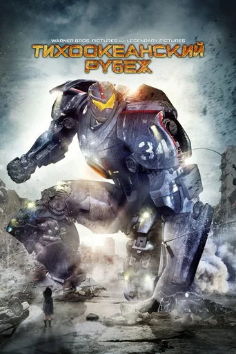

Тихоокеанский рубеж 2013
Когда из морских глубин поднялись легионы чудовищ, известных как кайдзю, началась война, которой суждено было забрать миллионы жизней и свести «человеческие ресурсы» почти к нулю всего за несколько лет. Чтобы сражаться с пришельцами, было создано специальное оружие: огромные роботы, названные егерями, они управлялись одновременно двумя пилотами, чьи сознания соединены с помощью нейронной связи. Но даже егеря оказываются почти бессильны перед лицом безжалостных кайдзю. На грани поражения у защитников человечества нет выбора, кроме как обратиться к двум весьма сомнительным героям – никому не нужному бывшему пилоту и неопытному стажеру – которые объединились, чтобы повести в бой некогда легендарного, но сейчас устаревшего егеря. Вместе они оказываются единственной надеждой человечества, последним препятствием перед надвигающимся апокалипсисом.
Открыть в каталогеДанные и постеры принадлежат их правообладателям. Этот продукт использует TMDB API, но не одобрен и не сертифицирован TMDB.